Лабораторная работа №2
Первоначальная настройка Git
true
today
Информация
Докладчик
- Галиев Самир Салаватович
- студент
- дисциплина: Операционные системы
- группа: НКАбд-02-25
- Российский университет дружбы народов им. П. Лумумбы
- 1032252590@rudn.ru

Вводная часть
Актуальность
- Системы контроля версий — обязательный навык для разработчика
- Git позволяет работать в команде над одним проектом
- Позволяет отслеживать историю изменений
- Возможность отката к любой версии проекта
Объект и предмет исследования
- Система контроля версий Git
- Локальные и удалённые репозитории
- SSH и PGP ключи для аутентификации
Цели и задачи
Цель: Изучить идеологию и применение средств контроля версий
Задачи: - Изучить системы контроля версий и их назначение - Освоить основные команды Git - Научиться настраивать локальный и удалённый репозиторий - Изучить работу с SSH и PGP ключами - Научиться подписывать коммиты
Материалы и методы
- Система контроля версий Git
- GitHub CLI
- SSH и PGP ключи
- Терминал и консольные утилиты
Теоретическая часть
Системы контроля версий
VCS (Version Control System) — система для работы нескольких человек над одним проектом
Возможности VCS: ::: incremental - Фиксировать изменения - Совмещать изменения от разных участников - Производить откат к любой версии проекта :::|
Выполнение работы
Шаг 1. Установка программного обеспечения
1.1 Установка Git
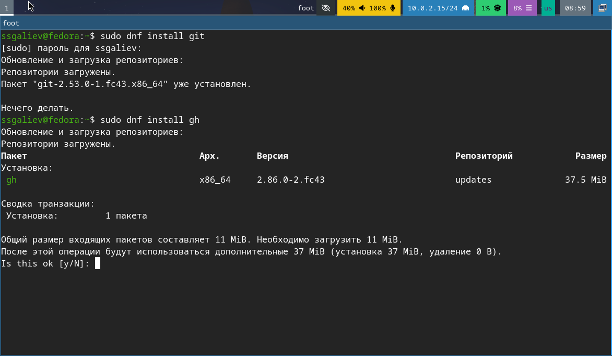
Установка гит1.2 Установка GitHub CLI
Установка CLI
Шаг 2. Базовая настройка Git
2.1 Настройка имени, email, кодировки UTF-8, начальной ветки и т.д.
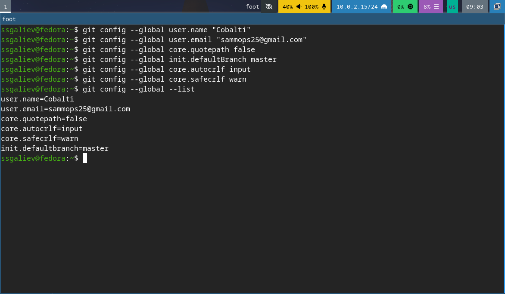
задаем имя и почтуШаг 3. Создаем SSH и PGP ключ(прикрепляем их к гитхабу)
3.1 Генерация RSA ключа
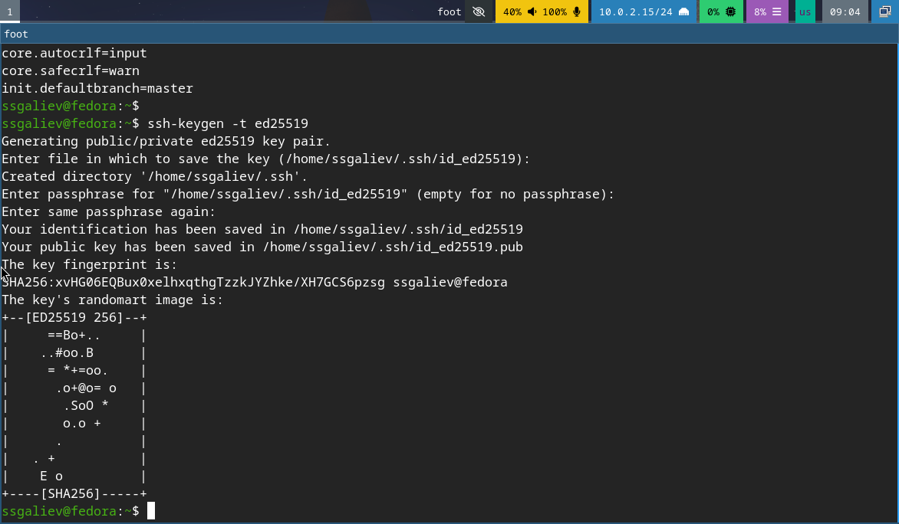
генерируем ключ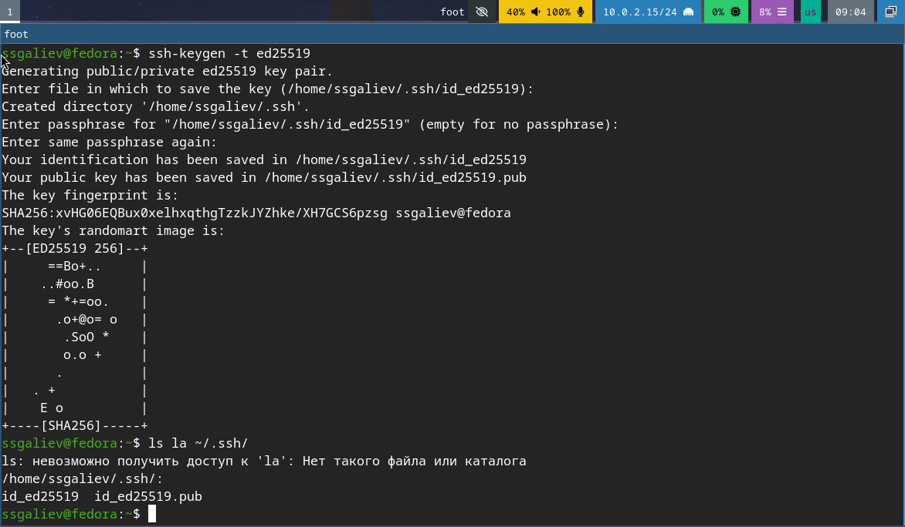
Генерируем ключ(публичный ключ) и проверка созданных ключей. PGP ключ также создаем и прикрепляем к нашему гиту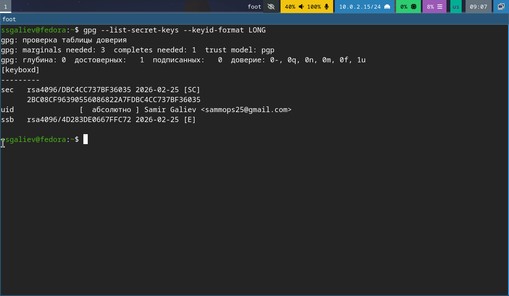
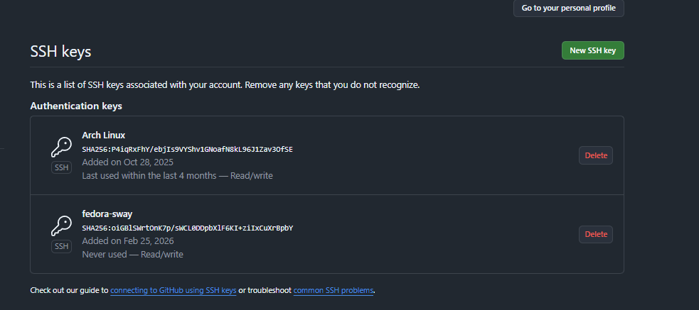
Прикрепление ssh и pgp ключа к гитхабуШаг 4. Настройка автоматических подписей коммитов
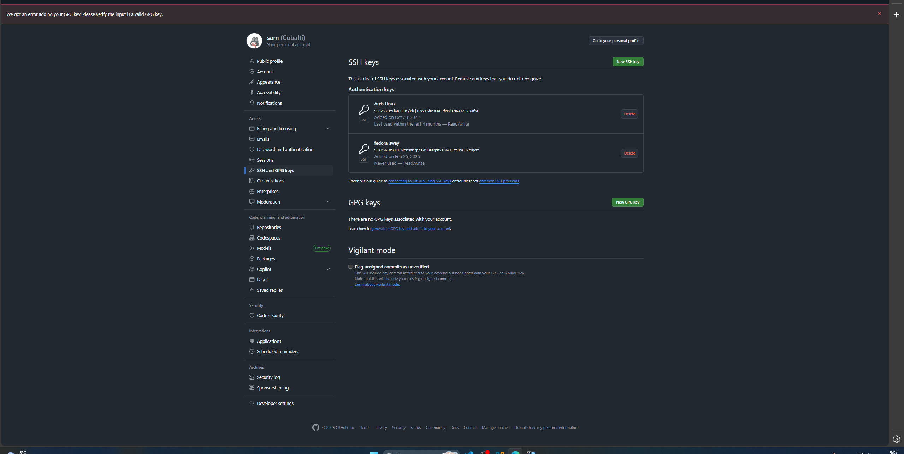
Настройка для коммитовШаг 5. Настройка Gihub CLI
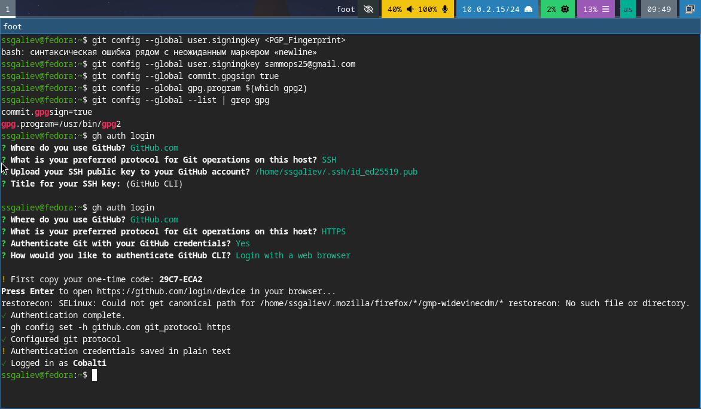
Шаг 6. Создание репозитория курса
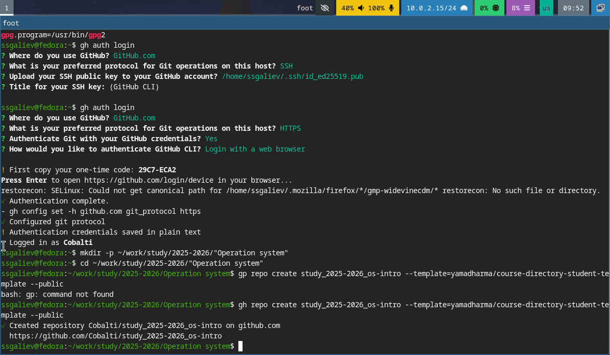
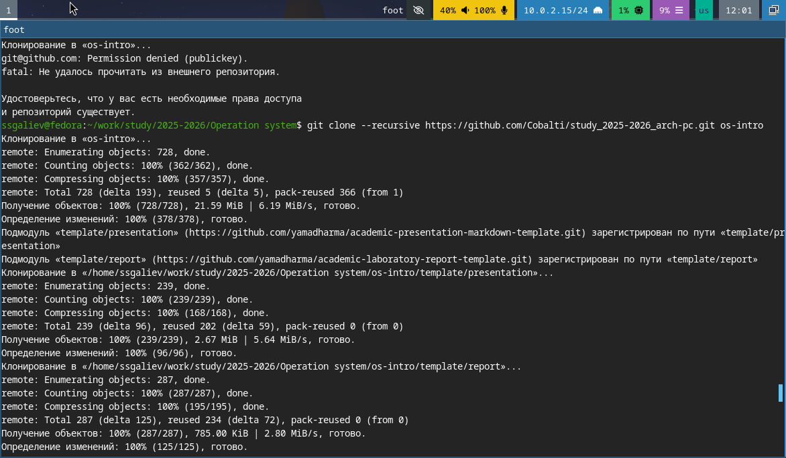
создание репозитория и его клонированиеШаг 7. Настройка каталога курса, удаление лишних файлов, создание каталогов и отправка файлов на сервак
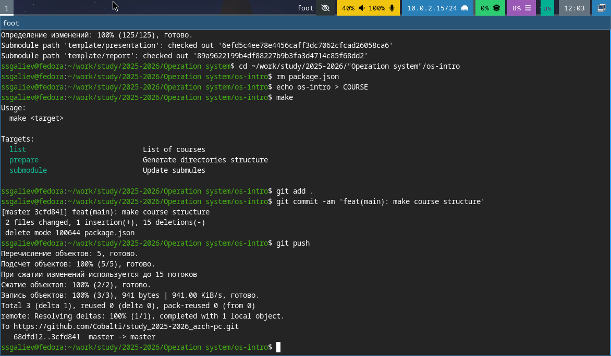
Переход в каталог курсаШаг 8. Проверка подписей коммитов
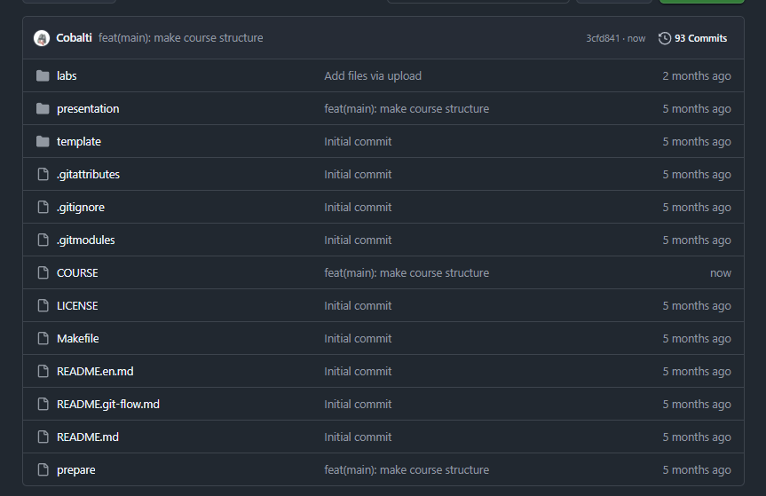
Удостоверямеся что все верноОтветы на контрольные вопросы
1. Что такое система контроля версий?
2. Централизованные и распределённые VCS: в чём
разница?
3. Для чего нужны git add и
git commit?
4. Зачем нужны SSH-ключи в Git?
5. Чем отличается PGP-подпись коммита?
6. Что делает git config --global?
7. Зачем нужен core.autocrlf и какое значение в
Linux?
8. Как проверить подпись коммита?
9. Что делает git flow init?
10. Как создать и отправить тег версии?
Выводы
В ходе выполнения лабораторной работы были достигнуты следующие результаты: 1) Изучения системы контроля версий 2) Выполнена настройка Гит 3) Создание ключа безопасности 4) Настроена интеграция с GitHub 5) Создание рабочего пространства
Цель работы полностью достигнута.
Итоговый слайд
- Git - это очень удобный и обязательный инструмент для разработчика
- Правильная настройка безопастности защищает ваш код
- PGP - подписи подтверждают авторство коммитов
- Github - удобная и гибкая платформа для хостинга
Вопросы?
Контакты: Email: 1032252590@rudn.ru GitHub: @Cobalti